4WD skid-steer AMR running ROS2 Humble with SLAM Toolbox, Nav2, and EKF sensor fusion. RPLIDAR + OAK-D Lite for perception, YOLOv8 on-device waste detection, 6-DOF arm via MoveIt2. Capstone project, compute split across Raspberry Pi and laptop over a UART-to-ESP32 control bridge.
Hi!
I'm Chidubem, a final-year Mechatronics Engineering student at Nile University of Nigeria. I build autonomous robots and the MLOps systems that ship them.
Currently finishing Cika, an autonomous waste-collecting robot, and building GramAI for the Africa Deep Tech Challenge 2026. I care about the full stack — from ROS2 control loops to the pipelines that get models into production.
Notes, experiments, and things I'm building.
Open to ML and robotics engineering roles, and exploring graduate research in robotics. Best way to reach me: email.
About
I build autonomous robots and the machine learning systems behind them — ROS2 navigation stacks, sensor fusion, and the MLOps pipelines that take models from notebook to production.
I like working close to the hardware: debugging sim-to-real gaps, tuning EKF configs, getting a robot to actually do what the simulation promised.
My capstone, Cika, is a 4WD skid-steer robot that navigates and sorts waste using SLAM, Nav2, and on-device perception. On the ML side, I built Sentinel, a nine-container MLOps platform for real-time fraud detection, and I'm currently building GramAI for the Africa Deep Tech Challenge 2026.
Outside of building, I write The Nerd Stack, a newsletter on robotics, MLOps, and ROS2.
Currently
Finishing Cika, an autonomous waste-collecting robot, for my B.Eng. capstone.
Building GramAI for the Africa Deep Tech Challenge 2026 (Gate 1: Aug 25).
Interests
ROS2 & Robotics
MLOps
RAG & LLMs
VLA Models
Technical Writing
Achievements
-
2026 (Current)
Africa Deep Tech Challenge 2026
Building GramAI, a Python traceback debugging assistant, targeting the Gate 1 deadline (Aug 25).
-
July 2026
B.Eng. Mechatronics Engineering, Nile University of Nigeria
Graduating with a capstone project on Cika, an autonomous ROS2-based waste-collecting robot.
-
2025
Reservoir Performance Intern, SLB
Seven-month internship in Port-Harcourt covering data acquisition, demand forecasting, and Power BI reporting.
-
2025
Sentinel: Fraud Detection MLOps Platform
Built and documented a nine-container MLOps stack for real-time credit card fraud detection.
-
2022–2023
Hamoye AI Internships
Data analytics and MLOps internships, including containerized model deployment with Docker and Kubernetes.
Currently Shipping
End-to-end MLOps platform for credit card fraud detection. Nine-container Docker Compose stack: Airflow, MLflow, Feast, FastAPI, PostgreSQL, MinIO, Redis, Streamlit. Sub-10ms feature serving, daily automated training pipeline.
Python traceback debugging assistant built on Qwen2.5-3B via llama.cpp, with a two-tier RAG corpus for grounded fixes. Built for the Africa Deep Tech Challenge 2026.
Path Planning Algorithm Analysis
shippedComparative study of BFS, DFS, A*, and a Genetic Algorithm on static and dynamic grid environments. Custom C++ visualization engine built with Raylib, benchmarked across a 100x100 grid with moving obstacles.
Recent Writing
Vision Language Action (VLA) Models
A look at how VLA models bridge perception and physical movement, from RT-2 to pi0.
GitHub Activity
Duks31
GitHub →
Contribution heat map
